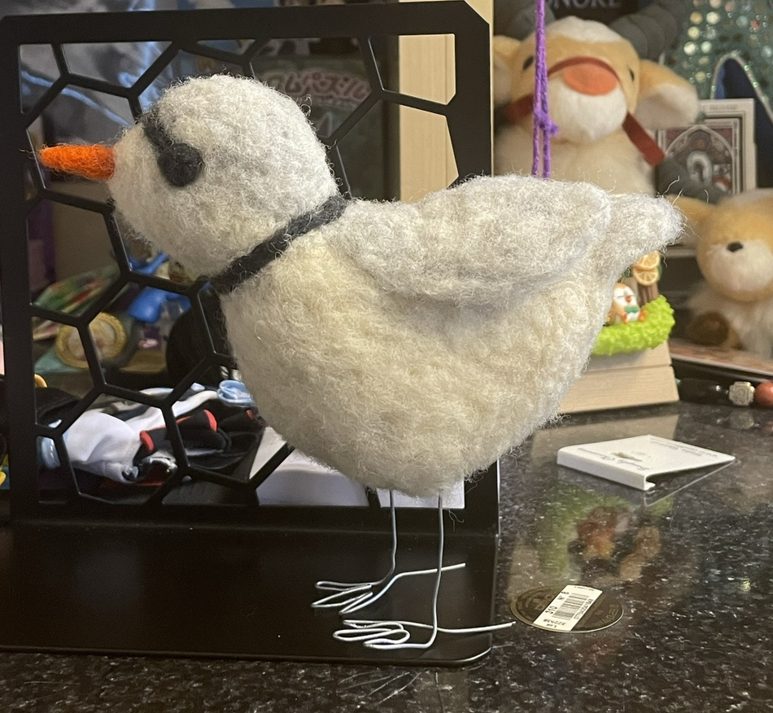

Hobbies
- Reading manga. Here are some of my favorites:
- Gintama
- Blue Period
- Slam Dunk
- Nabari no Ou
- From Far Away
- Usotoki Rhetoric
- Kekkaishi
- Don't Call it Mystery
- Queen's Quality
- This was just an excuse to test the "ordered list" tag and add another image.
- Going for long walks; birdwatching; staring at flowers
- Playing piano
- Cooking and baking using ballpark amounts and vibes instead of recipes
- Watching:
- (Knicks) basketball.
- Any videos of Silkie chickens I can get my hands on.
- Birds.
- Drawing, painting, sewing projects, crafts, etc.
- Eating Honeycrisp apples and whole carrots. It's an experience. Eating a Honeycrisp apple feels like biting into a healthy popsicle without the mess, and it tastes just as good. Carrots are the same minus the "taste" aspect; I use them as a palate cleanser instead.
- Replaying the GBA, DS, and 3DS Pokémon and Fire Emblem games
- Window shopping at book, art, stationery, and specialty food stores (i.e. honing my self-control and willpower).

* I needle felted the bird. It is a piping plover.
Index